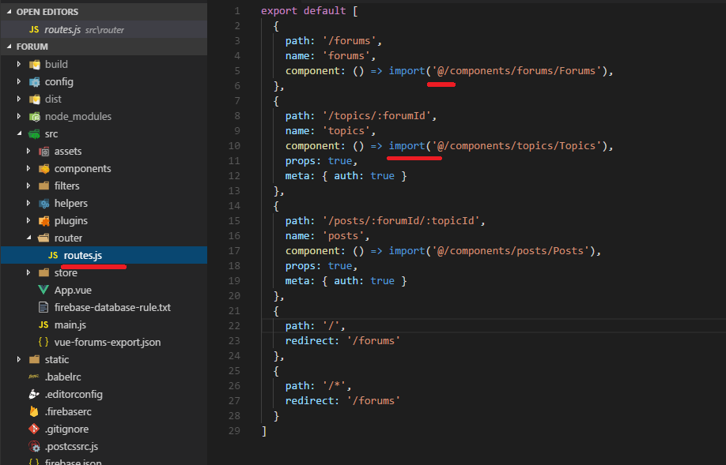
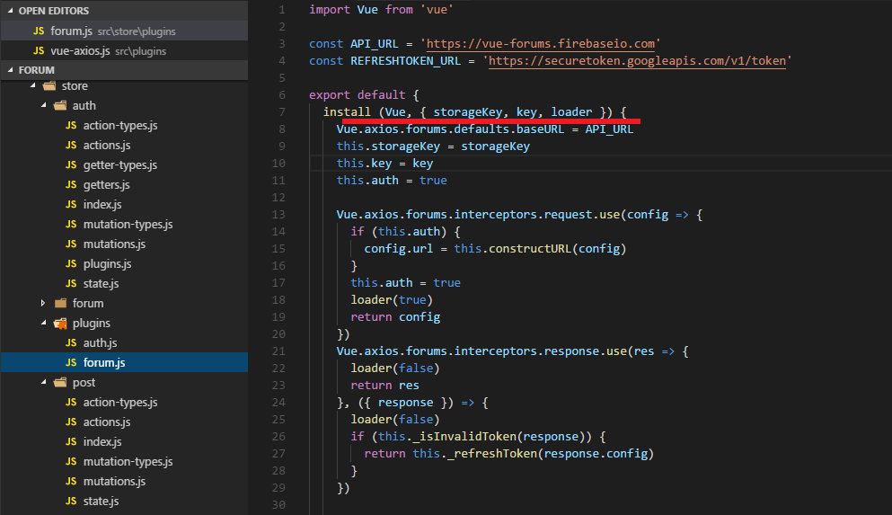
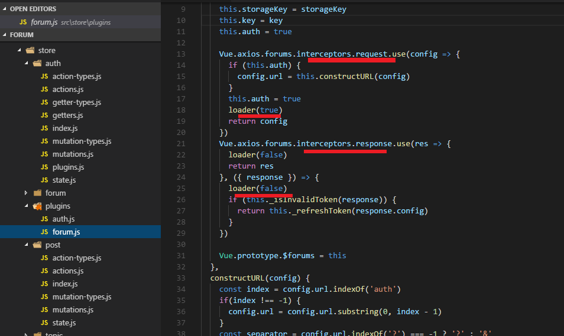
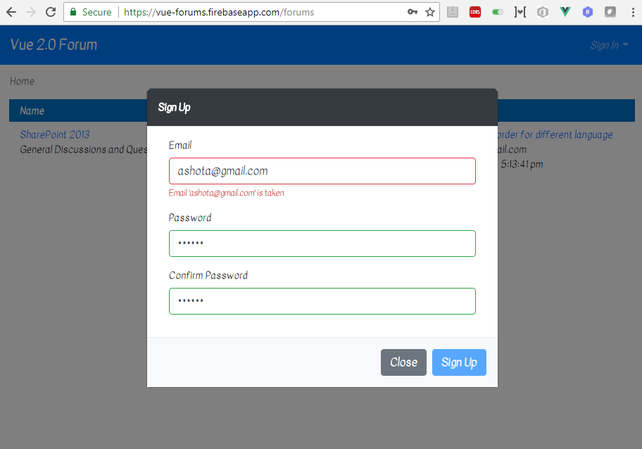

Vue.js 2.0 Forum Description
Demo link: https://vue-forums.firebaseapp.com/
Video link: https://youtu.be/33WeNhsAcBk
How to run application: https://ashot72.github.io/Vue2Forum/index.html
Git Repository: https://github.com/Ashot72/Vue2Forum
Please read How to run application first.
This is Vue.js 2.0 forum web application using Single File Components approach. Instead of dividing the codebase into three huge layers that interweave with one another,
it makes much more sense to divide them into loosely-coupled components and compose them. Inside a component, its template, logic and styles are inherently coupled,
and collocating them actually makes the component more cohesive and maintainable.
The app is based on
Vue.js https://vuejs.org/ is the progressive JavaScript Framework for building user interfaces. Unlike other monolithic frameworks, Vue is designed from the ground up to be incrementally adoptable.
Vuex https://vuex.vuejs.org/ is a state management pattern + library for Vue.js applications. It serves as a centralized store for all the components in an application,
with rules ensuring that the state can only be mutated in a predictable fashion.
Vue Axios https://www.npmjs.com/package/vue-axios is a small wrapper for integrating axios to Vuejs. Axios is a Promised based HTTP client for the browser and node.js.
Vue Router https://router.vuejs.org/ deeply integrates with Vue.js core to make building Single Page Application with Vue.js a breeze.
Vuelidate https://monterail.github.io/vuelidate/ is a simple, lightweight model-based validation for Vue.js 2.0.
Bootstrap + Vue https://bootstrap-vue.js.org/ provides one of the most comprehensive implementations of Bootstrap V4 components and grid system available for
Vue.js 2.4+, complete with extensive and automated WAI-ARIA accessibility markup.
Forum web application is hosted on Firebase https://vue-forums.firebaseapp.com/ and uses Firebase database. Firebase Database REST API is used to authenticate and access Firebase Database URI as a REST endpoint.
No Firebase SDK is used. The reason is that any other REST API endpoints can be integrated easily.
Forum web application implements many Vue.js features such as props, watchers, named slots, mixins, event bus, transitions/animations, lazy loading, global/in-component guards
scrolling behavior etc.
When SPA (Single Page Application) grows in complexity, so does the size of the application bundle. Vue Router supports webpack's built in async module loading system.
Bundles can be loaded on-demand when the route is accessed.

Figure 1
You can see import statement which is equired to load separate chunks. Import statements start with @ sign.
Figure 2
This is done with Webpack resolve.alias configuration option and isn't specific to Vue. It gives you a relative path from the src file and it removes the requirement of the .vue at the end
of the import path. You do not need to have an import something like '../../../src' in your code.
Figure 3
Similarly, we point to noimage.jpg which is the profile picture on posts page.
Figure 4
You will see 4 JavaScript files loaded in the Chrome's console by refreshing the forums initial page.
Figure 5
Click SharePoint 2013 forum link and navigate to topics page. You will see another chunk loaded.
Figure 6
Click Search result order for different language topic link and navigate to posts page. Another chunk loaded. Loading chunks on demand is critical in large scale web applications.
We do not load all the code when application is starting. With lazy loading we are taking one segment of code, chunk and loading it on demand as the app requests it.
Application's state management is based on Vuex which a state management pattern is + library for Vue.js applications.
Figure 7
State: Vuex uses a single state tree -that is, this single object contains all your application level state and serves as the single source of truth. This also means usually you will
have only one store for each application.
Figure 8
Getters: Sometimes you may need to compute derived state based on store state, for example, authentication based on idToken state.
Figure 9
Mutations: The only way to actually change state in Vuex store is by committing a mutation.
Figure 10
Actions: are similar to mutations, the differences being that:
Instead of mutation
the state, actions commit mutations
Actions can contain
arbitrary asynchronous operations.
Figure 11
Modules: Due to using a single state tree, all state of your application is contained inside one big object. However, as our application grows in scale,
the store can get really bloated. To help with that, Vuex allows us to divide our store into modules. Each module can contain its own state, mutations,
actions, getters and even nested modules.
Figure 12
Namespacing: By default, actions, mutations and getters inside modules are still registered under the global namespace: this allows multiple modules to react
to the same mutation/action type. When the module is registered, all of its getters, actions and mutations will be automatically namespaced based on path the module
is registered at.
Figure 13
Namespaces are auth, forum, topic and post.
Figure 14
From the post actions to dispatch forums or topics we must use namespace. We should also use { root: true } which is required to dispatch actions or commit mutations in the global namespace.
You can see we dispatch in the code with forum namespace and UPDATEFORUM with { root: true }. If we omit { root: true } then the path will be forum/post/${ UPDATEFORUM } which is a wrong path.
Figure 15
mapState: Create component options that return the sub tree of the Vuex store. When a component needs to make use of multiple store state properties or getters, declaring all these
computed properties can get repetitive and verbose. To deal with this we can make use of the mapState helper which generates computed getter functions for us. Note, the use of topic and
auth namespaces.
Figure 16
Here is accessing the forums without mapState just via $store.state.
Figure 17
mapGetters: Create component computes options that return the evaluated value of a getter. The mapGetters helper simply maps store getters to local computes properties.

Figure 18
Here is accessing AUTH without mapGetters via $store.getters.

Figure 19
mapActions: Create component methods options that dispatch an action.
Figure 20
Here is dispatching without mapActions via $store.dispatch.
Figure 21
We also defined plugins for store mutations. It is called after every mutation and receives the mutation descriptor and post-mutation state as arguments.

Figure 22
Based on mutation type AUTHDATA or CLEARAUTHDATA we add a record to local storage or remove it respectively.
Figure 23
Vue Plugins add global-level functionality to Vue. There is no strictly defined scope for a plugin: there are typically several types of plugins you can write.
One of them is adding some Vue instance methods by attaching them to Vue.prototype. A Vue.js plugin should expose an install method. The method will be called with
the Vue constructor as the first argument, along with possible options. The options we passed are key and loader callback. This plugin is used for Firebase authentication.

Figure 24
Second Vue plugin is used for forums operations and exchanging a refresh token for an access token which will be discussed later.
Figure 25
Here are forums operations such as updateTopic, fetchPosts etc.
Figure 26
To access a Vue plugin instance we do it via this. In our case we want to access the Vue plugin from Vuex so there is no this in this case. For that reason
we create a vue instance let v = new Vue() and access via that instance v.$auth.
Figure 27
We call plugins using Vue.use. You can see that we use 2 axios instances for the plugins. Loader callback calls EventBus.$emit.
EventBus is used to communicate between Vue.js components. The EventBus is used to show or hide loading icons. We emit event LOADER_EVENT
Figure 28
In App.vue we register a listener which listens for event
LOADER_EVENT and based on the value loading
which is either true or false
we either show the loader or hide it respectively.

Figure 29
loader callback is called with false or true values in axios request and response interceptors.
Figure 30
User is authenticated to Firebase after he is Signed In or Signed Up. It uses token-based authentication. Expiration date is 3600 seconds (1 hour). This means that after an hour
the access token (id token in Firebase case) is expired and user either have to be logged out or the application should exchange the refresh token for an access token.
In our case we take the second approach: exchanging the refresh token for an access token. Usually refresh tokens have longer lifetime that access token such us 6 months.
In Firebase case refresh token never expires which means that the user can infinitely be logged on unless he is logged out by himself.
Figure 31
email, expiresIn, idToken and refreshToken are kept in local storage.
Figure 32
Suppose one hour passed after a user has been logged on. He is clicking a post link to load posts for example. If Chrome's console is opened he will see 401 (Unauthorized)
requests. He will still be redirected to posts page as a new IdToken token will be obtained via refreshToken for the next one hour. If the user refreshes the local storage entry (Figure 31)
he will see new IdToken instead of the old one and so on. The application is implemented using Firebase REST API purely, no Firebase SDK. The reason is that you can connect to another REST endpoint
easily.
Figure 33
Firebase requires ?auth=idTOken be appended to the request but for other cases you may need to pass bearer-token via headers.
Figure 34
The forums initial page can be accessed anonymously. If you try to access other pages such as topics page you have to authenticate.
Figure 35
In router.js file we specify { auth: true } for meta tag. We specify meta tag only for topics and posts routing.
Figure 36
Router.beforeEach(to, from, next): is global guard. Global before guards are called in creation order, whenever a navigation is triggered. Guards may be resolved asynchronously,
and the navigation is considered pending before all hooks have been resolved. In our app we dispatch AUTOSIGNIN action first. Application auto-signs the user after a page has been refreshed.
If there are valid local storage entries (Figure 31) then the apps set AUTH state to true. Next, we check if the route defines meta tag (Figure 35) and if the auth state is false (possibly user has been logout)
the we call forums route with query param e=401, otherwise we call next();
next function must be called to resolve the hook. The action depends on the arguments provided to next.
next(): move on to the next hook in the pipeline
next(false): abort the current navigation. If the browser URL was changed (either manually by the user or via back button), it will be reset to that of the from route.
next('/'): redirect to different location. The current navigation will be aborted and a new one will be started.
Figure 37
beforeRouteUpdate(to, from, next): is In-Component guard. beforeRouteUpdate is called when the route renders this component has changed
but the component is reused in the new route. In our app if the route is changed from
https://vue-forums.firebaseapp.com/forums to https://vue-forums.firebaseapp.com/forums?e=401 then the beforeRouteUpdate(to, from, next) will be called.
In that case we just show the dialog (Figure 34). We also check it in beforeRouteEnter(to, from, next).The reason is that
if a user is not authenticated (logged out) and try to go to https://vue-forums.firebaseapp.com/posts/-LEP35jzM4gEKsrShvlg/-LEP41EK8DCWnyJRA4V8
directly then he will be redirected to forums page and dialog will be displayed in this case. beforeRouteEnter(to, from, next) is described below in detail
but one thing that I want to mention is though the beforeRouteEnter does NOT have an access to this however you can access the instance by passing a callback to next.
The callback will be called when the navigation is confirmed, and the component instance will be passed to the callback as the argument. That is how we could
run vm.$refs.modal.show() in beforeRouteEnter.
Figure 38
Vue.js defines Lifecycle Hooks. Lifecycle hooks are an important part of any serious component. You often need to know when your component is created, added to the DOM, updated, or destroyed.
We call FETCHFORUMS action to load forums in created() lifecycle hook. In created hook, you will be able to access reactive data and events are active. Templates and Virtual DOM have not
yet been mounted or rendered.
Figure 39
Here is how the forums page looks like.
Figure 40
Let's modify page and add setTimout() of 5 seconds.
Figure 41
You see that page has rendered but data has not been arrived yet. Data will available in 5 seconds and you will have a fully loaded page (Figure 40)
That may not be the case you expect. You may want to see pages rendered as soon as data are available.
There is another way however using what's known as a route resolver, which allows you to get data before navigating to the new route.
Figure 42
We load topics page another way.
beforeRouteEnter(to, from, next): is In-Component guard and is called before the route renders this component is confirmed. It does NOT have access to this
component instance, because it has not been created yet when this guard is called.
As we do not have an access to this we import store and call dispatch via store. In this case as opposed to forum's created() lifecycle hook case the page will be rendered as
soon as data arrives.
Figure 43
Vue.js supports watchers. We can watch route changes and based on it render navigation. For example, if the route is posts we render posts navigation.
Figure 44
Here is posts navigation rendered via route watching.
Figure 45
Vue provides a variety of ways to apply transition effects when items are inserted, updated or removed form the DOM. In our app we
implement page transition fade effect with vue-router using third party library Animate.css. Watch the video to see the transition.
Figure 46
Animate.css library.
Figure 47
When using client-side routing, we may want to scroll to top when navigating to a new route or preserve the scrolling of history entries just like real page load does.
vue-router allows you to achieve these and even better, allows you to completely customize the scroll behavior on route navigation. This feature only works if the browser
supports history.pushState. When creating the router instance, you can provide the scrollBehavior function. The scrollBehavior function receives the to and from route objects.
The third argument, savedPosition, is only available if this is a popstate navigation (triggered by the browse's back/forward buttons).
Returning the savedPosition will result in a native-like behavior when navigating with back/forward buttons
If we want to simulate the 'scroll to anchor' behavior we use selector: to.hash.
Figure 48
If you hover Last Post link you will see hash #last attached.
Figure 49
Clicking the link, you will be navigated to Posts page and the scroller position will be the last post position.
Figure 50
If you look the scrollBevaior code you could see that instead of returning position we resolve promise with setTimout() of 2 seconds.
If return just position then the scrollbar will always go to the top of the page. The reason for that is transition discussed above.
What we have to do is return value as soon as the translon finishes (Watch the video).

Figure 51
fadeInRight animation takes one second, fadeOutLeft takes one second as well. Overall animation takes 2 seconds. That is the reason we put
2 seconds.
Figure 52
Vuelidate: is simple, lightweight model-based validation for Vue.js 2.0
Figure 53
We import validators and under validations object we define
properties. Password is required and
must be at least 6 characters in length. Password
and Confirm Password
must be the same.

Figure 54
Note, we also defined our custom async validator for email which is called unique. When user is typing an email field we send an axios request to Firebase Database
to find out If the user (email) already exists or not.

Figure 55
Firebase Password-Based account is used to store users. As you see ashota@gmail.com
is already registered so getting message Email
ashota@gmail.com is taken (Figure 54).
Figure 56
We keep a user email in the firebase database as soon as a user is successfully signed up. Custom async unique validator checks the user existence in users document.
Figure 57
Bootstrap-vue is used in the app which provides one of the comprehensive implementations of Bootstrap v4 components and grid system. If you look Form Input section you could notice
that forum inputs are rendered in different borders based on :state prop.
Figure 58
Considering form input state and vuelidate's error detection mechanism (e.g. $error, $valid, $dirty) we can render borders with different colors and show different error messages based on user's input.
Figure 59
:state and other props in template.
Figure 60
Mixins are a flexible way to distribute reusable functionalities for Vue components. A mixin object can contain any component options. When a component
uses a mixin, all options in the mixin will be 'mixed' into the component's own options. We defined formMixin.js which is used both in Sign Up and Sign In components.
Figure 61
mixins reference in SignupForm.vue file. Note, new instance of formMixin is created for each component.
Figure 62
App defines 4 documents forums, posts, topics and users. Forums keeps topics' references.
Figure 63
Topics keeps posts references which is required in our application.
Figure 64
This is the app database rules. Users must be authenticated to read from and write into the database. Users document does not require authentication as it is used after the Sign Up
and for async validator (Figure 53). Forums page can be accessed anonymously so forums document can be read without authentication.
Figure 65
.indexOn rule is specified to improve query performance.